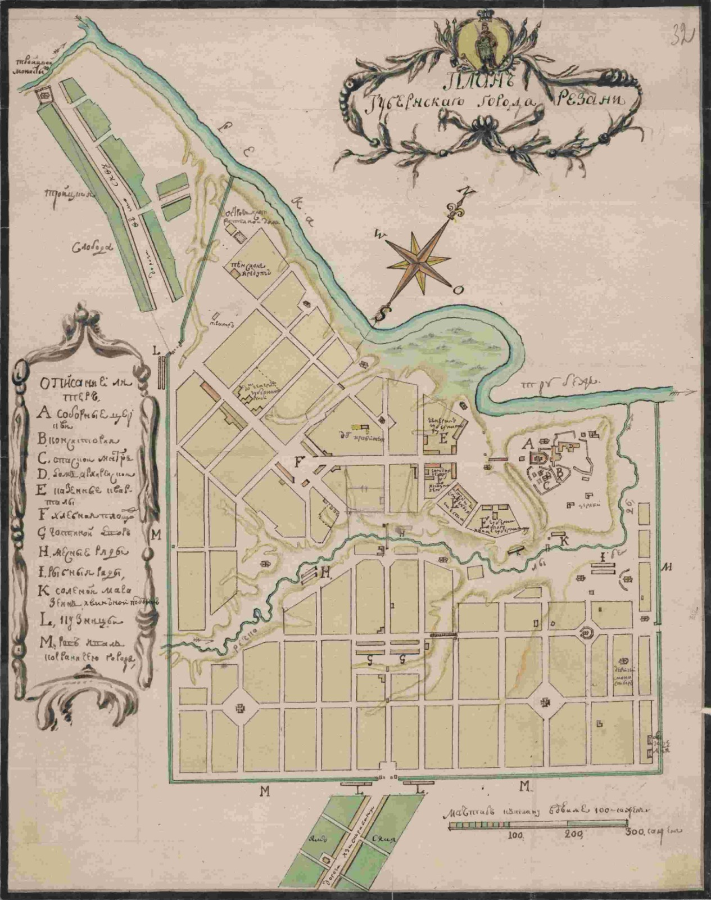
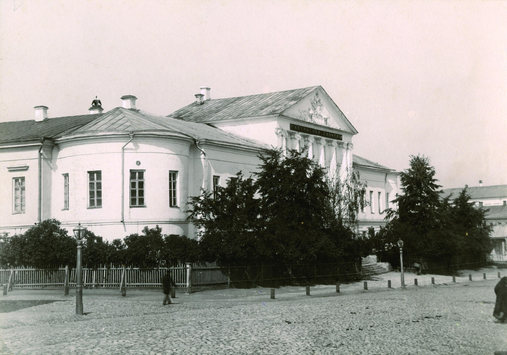
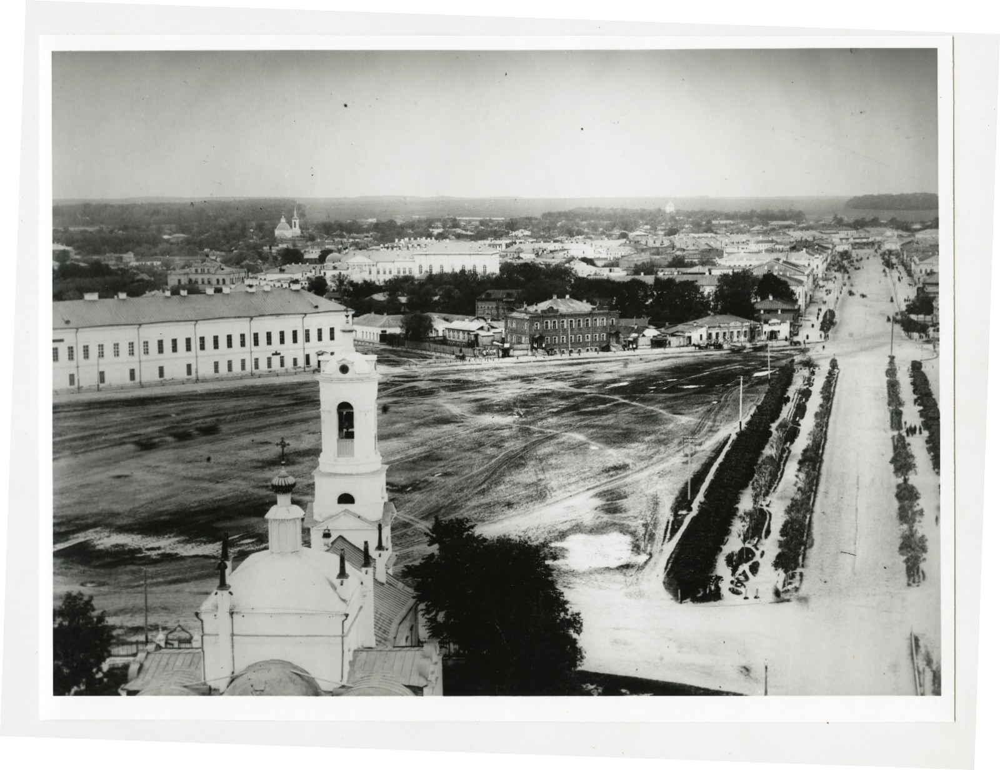
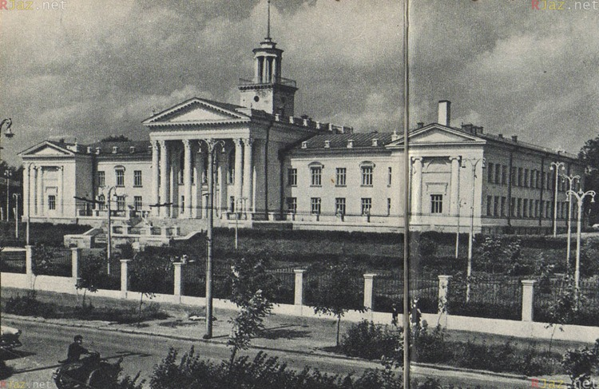
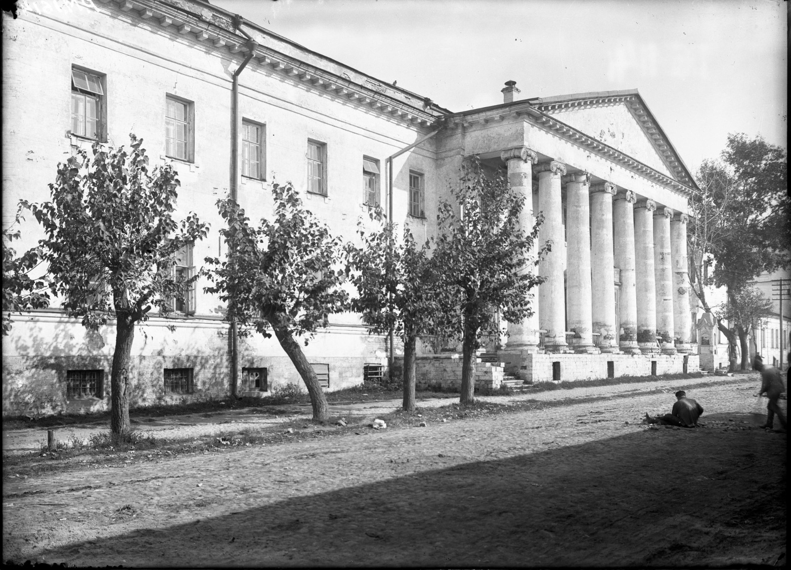

1. Pereyaslavl Ryazan (XV–XVI centuries)
1.1. Foundation of the city of Pereyaslavl Ryazan
Written sources
The record of the foundation of Pereyaslavl was discovered in the XIX century. in the margins of the book of the XV–XVI centuries. with religious texts – Psalms.

A sheet from the "Psalter of Pereslavl-Ryazansky" recording the founding of Pereslavl-Ryazansky.
One of its owners copied an important message from a source that has not reached us: "In the summer of 6603 (1095 according to modern chronology), the city of Pereyaslavl Ryazan was laid at the church of St. Nicholas the Old." Historians have great doubts about the authenticity of this date, because it is taken from a source unknown to science. It is possible that a dating error was made during the rewriting, because in the annals, Pereyaslavl was first mentioned only 200 years later, under 1300.
Archaeological research
What is the actual date of the foundation of the city? Archaeology comes to the rescue.
The first human settlements on the Kremlin hill appeared in the Bronze Age and the early Iron Age); (II thousand BC – I thousand AD).
If you believe the date from the Psalter, the city was founded in the XI century (1095). The materials of the XI century. archaeologists have not yet been able to find. However, it should be remembered that archaeologically, the territory of the Kremlin of Pereyaslavl has been studied rather poorly, and we have the right to wait for new discoveries.
According to the currently available data, the beginning of economic development of this territory dates back to the middle of the XII century, that is, long before the city appeared on the pages of the chronicle.
Another argument in favor of the foundation of Pereyaslavl Ryazan in the middle of the XII century is the general historical situation. It was at that time that new cities appeared, the Ryazan lands were being isolated and their allocation into an independent principality.
1.2. Who founded Pereyaslavl Ryazan
The foundation of the city is attributed to one of the Chernigov princes – Yaroslav Svyatoslavovich, the grandson of Yaroslav the Wise.
There is no doubt that the city was founded by immigrants from the Southern Russian lands. They brought their native names of rivers and cities to the Ryazan land. This is how the name of the city appeared – Pereyaslavl Ryazan and nearby rivers – Trubezh, Lybed and Dunaychik.
1.3. Pereyaslavl XIV-XVII centuries – fortress city
At the beginning of its history, Pereyaslavl was a small fortress that occupied the northeastern part of the Kremlin Hill. In the first half of the XIV century . Pereyaslavl becomes the capital of the Ryazan Principality and by the XV century occupies the entire territory of the hill (about 27 hectares).
At the beginning of the XVI century . The Ryazan Principality became part of the Moscow state. From now on, Pereyaslavl Ryazan was an integral part of the Zasechnaya Line – a huge line of defensive fortifications designed to protect the southeastern borders of Russia from Tatar raids. The city retained its military significance until the end of the XVII century . The documents and descriptions of this century give us the most complete picture of its appearance.
The Kremlin is the fortified core of the Russian city, the central and most ancient part of it. It housed the prince's court, the main stone temples, estates of the nobility and craft workshops that served the prince's court. The Kremlin of Pereyaslavl had quite powerful fortifications consisting of earthen ramparts on which wooden walls and towers were located. The walls had a height of five to seven meters. There were 13 towers – four passers-by and nine deaf. The height of the towers was 14-18 m . Only the main tower, Glebovskaya, to which the bridge of the same name led, was made of stone. On three sides the city was surrounded by the rivers Trubezh and Lybed, from the west there was a deep moat.

V.A. Kuzmin's book. Pereslavl-Ryazansky in the 17th Century.
In addition to the Kremlin, the main areas of the medieval Pereyaslavl of Ryazan were the Ostrog, Upper and Lower Posad. The prison was first mentioned in the chronicles in 1513, it is a fortified part of the city, adjacent to the Kremlin from the most vulnerable western floor side and represented an additional line of defense. It was protected by hollows of oak decks pointed from above, a deep moat and a palisade line with 15 towers.
Posad – trade and craft settlements located outside the city walls to the south and west of the Kremlin. Since the XVII century. in Pereyaslavl, settlements of serving people also begin to form – Pushkarskaya, Streletskaya, Yamskaya. On the north-western outskirts of the city there was a church Bishop's sloboda, east of the Kremlin – Vypolzova Sloboda.

V.A. Kuzmin's book. Trade in Pereslavl-Ryazansky in the 17th Century.
The whole of Pereyaslavl had dense buildings, the main part of the buildings was wooden.
Archaeologists have managed to discover medieval streets with wooden pavements. The construction of the street pavement is traditional: its base was three logs placed parallel to each other along the street. On these logs, across them, flat side up, oak scaffolds were laid. The width of the central streets averaged 2-3 meters, smaller streets had a smaller width and, often, were accessible only to pedestrians.

The plan of Pereslavl-Ryazansky. 1772. RGADA (Russian State Archive of Ancient Documents).
The layout in the city was homestead. On the territory of the estates, fenced with a board or log fence or palisade, there was a residential house, outbuildings or a craft workshop. The estates were located on both sides of the wooden pavement, closely adjacent to it. The average area of a residential building was about 16 sq. m.

Grain excavation. Uncovered city pavements. 2006.
In the second half of the XVII century . Pereyaslavl is losing its defensive significance. As a result, the condition of the city's fortifications deteriorated, the number of towers was reduced, walls were only repaired in place of the lost towers. In one of the documents of the beginning of the XVIII century. it was said that "the city of Pereyaslavl Ryazan was built of a wooden oak forest and in the past year in many places that city, jail and towers fell down from dilapidation."
Until our time, only a moat and a rampart dating from the XIII–XVII centuries have survived from the defensive structures of Pereyaslavl.
1.4. The population of Pereyaslavl Ryazan
A significant part of the population of Pereyaslavl were service people: archers, gunners, zatinschiki, Cossacks. Representatives of the nobility, churchmen and townspeople also lived in the city. Yamskaya Sloboda was inhabited by coachmen, Episcopal – episcopal servants, Vypolzova – fish draggers who supplied fish to the royal court. The merchant class was not numerous. A feature of Pereyaslavl was the active trading activity of serving people.
The number of inhabitants of the city in the XVII century left about several thousand people.
1.5. The beginning of stone construction
XVI–XVII centuries – the time of active stone construction in Pereyaslavl. Already in the XV century, cathedrals in honor of the Assumption of the Virgin (now the Nativity of Christ) and the Archangel Cathedral, which was a princely house church, were built on the territory of the present Kremlin.
During the XVII century, a magnificent ensemble of civil buildings of the bishop's court was formed, monastic and parish churches were built.
At the end of the century, a grandiose new cathedral of the Assumption was built, one of the tallest buildings in Russia of the XVII century.
1.6. Preserved monuments of Pereyaslavl Ryazan
Cathedrals have been preserved on the territory of the Kremlin: the Cathedral of the Nativity of Christ (former Assumption), which served as a princely tomb; the Archangel; the new Assumption (summer cathedral), which is a striking example of the Naryshkin style.
The ensemble of the bishop's court of the XVII century includes the bishop's chambers (Oleg's Palace), the Singing and Consistory buildings, the buildings of the Forge and the cooperage, the Stables and the carriage house. Of the outbuildings, Granaries for grain storage (later called the Cherni Hotel) are particularly distinguished – the only building of this kind in Russia that has been preserved without external alterations.
From the three monasteries surrounding the city, the complex of buildings of the Spassky Monastery of the XVII–XIX centuries has been most fully preserved. It includes the Cathedral of the Transfiguration, the Epiphany Church – a vivid example of the Posadsky style, and the Hotel of the Nobility – the former abbot and fraternal buildings, now united in a single volume.
In the north-eastern part of the Kremlin hill is the Church of the Holy Spirit – the only building preserved from the Dukhovsky monastery of the XV century. The monastery was abolished at the end of the XVIII century . The temple belongs to a group of unique, rarely seen two-tent buildings of the first half of the XVII century.
On the territory of the Upper Posad, the parish churches of the XVII century have been preserved: Ilyinskaya, Saviour on the Yar, in the Bishop's Sloboda – Borisoglebsky Cathedral, on the Lower Posad – the Annunciation and Jerusalem churches.
The monuments of the Kremlin are included in the State Code of Especially Valuable Cultural Objects of the Peoples of the Russian Federation, the Posad temples are monuments of federal significance